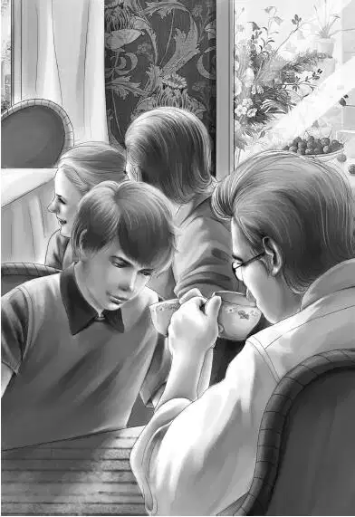

When Mr.Alden met his grandchildren at noon they were all bursting with news. Mr. Alden certainly had news， too， but he did not tell it then. Nobody thought of lunch. They were too busy talking.
Henry was the one to tell his grandfather about the toy bank and the old wooden doll and the string of buttons. He said， “This man is cheating the people in two ways. First he doesn’t pay enough for the old coins， and then he trades their treasures for cheap things. The new things are bright colored， so the children are delighted. They haven’t any idea that old buttons are worth anything.”
Benny added， “Of course my little Isabelle thinks her new doll is lots better than an old wooden doll. It really is prettier.”
Grandfather nodded and said， “This Mr. Willet is certainly not honest. I’m sure of that. Those old iron banks are worth much more than a knife.”
Henry said， “Freddy is clever. So far he hasn’t done a thing that is against the law. The people here think he pays enough. They are delighted to trade.”
“So he hasn’t really stolen a thing，” finished Benny.
“Exactly right！You just wait，” said Jessie. “He will go from one house to another. But even if he should steal things， what can we do， Grandfather？”
Mr. Alden said， “You children can’t arrest him， certainly.” They all laughed at the idea.
Then they began to tell Mr. Alden about school. He watched Jessie and Violet. They looked tired to him. He said， “Let’s have another quick lunch today. Then we can eat an early supper at the Sea Shell. You girls look tired.”
“Oh， no， we’re not tired！” Jessie said. “We are just thinking hard.”
But both girls were willing to set out the peanut butter and jelly for sandwiches and have doughnuts and milk for dessert. Then the four teachers began to study their lessons for the next day.
“It’s a funny feeling，” said Mr. Alden， “to see you all sitting around doing schoolwork in vacation.”
“This doesn’t seem like work，” said Violet. “It’s just something very interesting mixed up with a thief and a poor rich lady living all alone.”
“And lots of cute children，” said Benny. “Anyway， I can tell Max that something happened on his old island—but I’m not quite sure what it is yet.”
The Aldens sat out in the yard by their hotel with their work. From there they could see the store and the beach and the houses. They could see everything in the village except the mansion. But nobody saw Freddy Willet. The afternoon passed quickly.
Then about five o’clock they saw the red car go bumping over the rocky road to Northport.
Mr. Alden got up and took his hat. “I have an idea，” he said. “Let’s go right now to the Sea Shell and have supper.”
“Right！” said Henry. He went at once to get the car. They all thought that Grandfather was following Freddy， but they did not say so.
When Henry drove into the parking place of the Sea Shell， there was the red sports car！
“I wonder why the Money Man comes over here to eat，” said Benny.
“He has to，” said Henry. “There’s no place to eat on the island.”
Sure enough， there was the Money Man sitting at a table with two other people， a man and a woman. He said to the Aldens “Hello， there，” and went right on talking to his guests.

Suddenly Henry whispered to Benny， “Change seats with me， Ben， will you？” Benny got up at once without asking why. He knew that Henry would tell him later. Now Henry sat with his back to the other table. Grandfather himself wondered why.
When their waitress had left them， Henry said in a low voice， “I know those people with Mr. Willet. The man is Dr. James English. He runs the museum at Adams College， and the woman is Miss Cox， the librarian. I hope they won’t see me.”
“I bet Freddy is trying to sell them something，” whispered Benny.
Grandfather said， “That’s just what he’s doing. I’m sure of it.”
“How do you know？” whispered Benny.
“I’ve met him，” said Grandfather. “I met him this morning in the store. He tried to buy my watch and the big penny on my watch chain.”
“Oh， you’d never sell those！Mr. Willet picked the wrong man that time，” Benny said. “Nobody could cheat you， Grandfather.”
Mr. Alden laughed quietly. He was watching Mr. Willet out of the corner of his eye. But he didn’t see him give anything to the strangers. Suddenly he said， “Let’s get out of here before Freddy gets through with his dinner. We don’t want his friends to see Henry.”
This was easy. Mr. Willet and his friends had just started on their dinner， and they were eating very slowly. The Aldens just went without dessert. When they left the table， they all stood behind Henry to cover him up. Henry went out at once to the car on the other side of the parking lot， and Mr. Alden waited to pay the bill.
Freddy Willet looked up and saw Mr. Alden.
The Aldens sat in the car for a few minutes. “What do you think Freddy is going to do， Grandfather？” asked Benny.
“That’s what I wanted to find out. He saw me， but he didn’t speak，” said Mr. Alden. “I think he’s making a deal with Adams College. I hope he won’t fool the librarian.”
Henry said， “She’s pretty smart， and she would know what coins are worth.”
He started the car and turned into the road.
The drive of thirty miles seemed longer than ever. As they came near the island， Violet was looking ahead. “Oh， look， Henry！The tide！”
“Oh， dear，” said Jessie. “The tide has turned！Why didn’t we think of that？It’s getting dark， too.”
Henry stopped the car and they all looked ahead. There was no road to the island. It was covered with seawater， which was getting deeper every minute.
“I don’t dare try it， Grandfather，” said Henry， frowning.
“Right， my boy！If we got stuck half way over， it would be no fun， I can tell you.”
Henry said， “I thought it seemed awfully wet when we came over. But I knew you must be following Freddy， and I don’t think he gets caught like this very often.”
“By the way，” cried Benny， “I wonder what Freddy will do？He’ll be caught， too. It will be six hours before it’s low tide again.”
“It will be nearer twelve hours， Ben，” said Henry. “You see the tide hasn’t been coming in long.”
“Let’s see，” said Jessie. “It is about eight o’clock now. The tide will be high at midnight， and low again at six o’clock in the morning！”
“We’re not in any danger， though， are we， Grandfather？” said Violet.
“No， my dear. We will just have to find a place to sleep.”
“Oh， boy！” shouted Benny. “We could sleep in the car！That’s what this station wagon is made for. We could do it， Grandfather！”
“Five people？” asked Grandfather， smiling.
Benny said， “I could take the car blanket and sleep on the top of the car. Oh， please！”
Grandfather laughed. He said， “I don’t think we would get much sleep. But I suppose you young people don’t mind that.”
“I don’t，” said Jessie. “I’d like to wait and see what Freddy will do.”
“Very well，” said Grandfather. “Find a place off the road， Henry， and we’ll try it.”